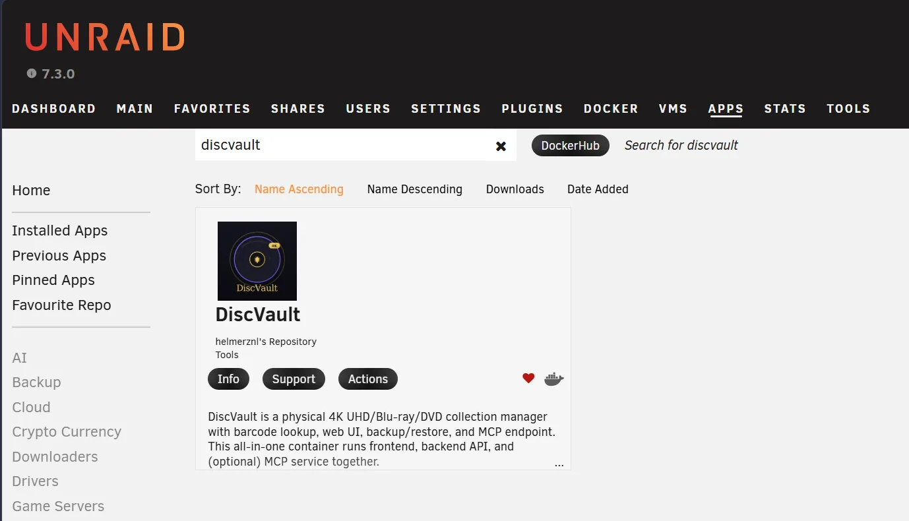

Installeer via Community Applications
Zoek DiscVault en gebruik de template zodat poorten, appdata-pad en basisvariabelen goed staan.
Installatie
Start DiscVault Next als all-in-one container. De web UI/API draait standaard op hostpoort 6080; MCP kan via /mcp of optioneel via poort 6090.

Quickstart
docker run -d \
--name discvault \
-p 6080:80 \
-p 6090:6090 \
-e TZ=Europe/Amsterdam \
-e RP_ID=localhost \
-e RP_ORIGIN=http://localhost:6080 \
-v /mnt/user/appdata/discvault:/data \
ghcr.io/helmerzNL/DiscVault:latestGa naar http://localhost:6080. Gebruik in productie een echte hostnaam en HTTPS, zodat passkeys betrouwbaar werken.
Configuratie
/dataRP_IDdiscvault.example.nl.RP_ORIGINhttps://discvault.example.nl.OMDB_API_KEY / TMDB_API_KEYJWT_SECRETUnraid
Zoek DiscVault en gebruik de template zodat poorten, appdata-pad en basisvariabelen goed staan.
Gebruik bijvoorbeeld /mnt/user/appdata/discvault als hostpad voor /data.
Gebruik de admin-backuptool of kopieer de data-map terwijl de container uit staat.
latest/stable is bedoeld voor normaal gebruik. beta volgt wijzigingen vanaf main.